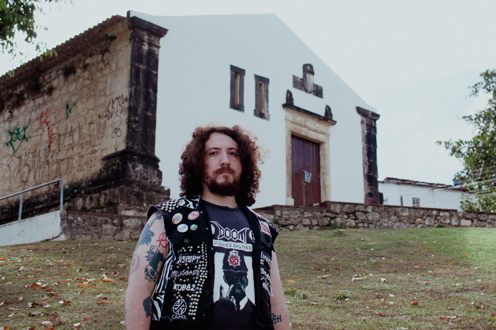

Sobre a Azul Turquesa
 Azul Turquesa é uma one man band paraibana de Doom e Black Metal que experimenta novas formas de fazer som a cada lançamento. Explorando o contraste entre a brutalidade e crueza do Black Metal e
a beleza e soturnez do Doom Metal, Azul Turquesa aborda questões existenciais e depressão, além de romances e histórias de horror.
A banda foi originalmente formada no dia 30 de novembro de 2021 quando fora lançada a demo intitulada AZUL TURQUESA (DEMO) contendo as faixas Obsessão (DEMO) e Mal Encorpado (DEMO). Embora formada nessa data, a banda já
viera sendo planejada pelo membro fundador Mailton "Soturna Cröstä" Lemos.
Azul Turquesa passou por algumas modificações na formação até agora: Soturna sempre gravou todos os instrumentos e produziu as músicas, no bom e velho faça você mesmo.
Os músicos paraibanos Sidney "Siel Boná" Dore, Pedro Dias, Bruna Penazzi e Tamyres "Efêmera" Meireles entraram na banda nos primeiros meses de sua existência.
Logo antes do fim do primeiro aniversário da banda foi decidido a saída dos membros, exceto de Efêmera, que continuou na bateria até janeiro de 2024.
O duo já lançou quatro demos intitulados:
- - Azul Turquesa (DEMO);
- - Fada sem asas (DEMO);
- - Vazio (DEMO);
- - Poema Fúnebre (DEMO).
Também quatro singles intitulados:
- - Espelho de Cristal;
- -CID 10 F19.5.
- -Nostalgia
E um EP intitulado:
- -Pusilânime.
Apesar de não tocar ao vivo, ainda, a banda compromete-se a ser presente nas redes e em estúdio.
A banda é ligada ao underground antifascista do Black Metal e frequentemente aparece ao lado de bandas de Red & Anarchist Black Metal. Sendo assim, é também uma banda de RABM.
Formação:
Soturna Cröstä: vocais, guitarras, baixo, teclas e bateria (programação).
Ex-membros:
- -Siel Boná: guitarra base;
- -Pedro Dias: guitarra solo;
- -Bruna Penazzi: contra-baixo;
- -Efêmera: bateria.
Contato: azulturquesabanda@gmail.com
Links: Linktree
Instagram: @azulturquesadoomblack